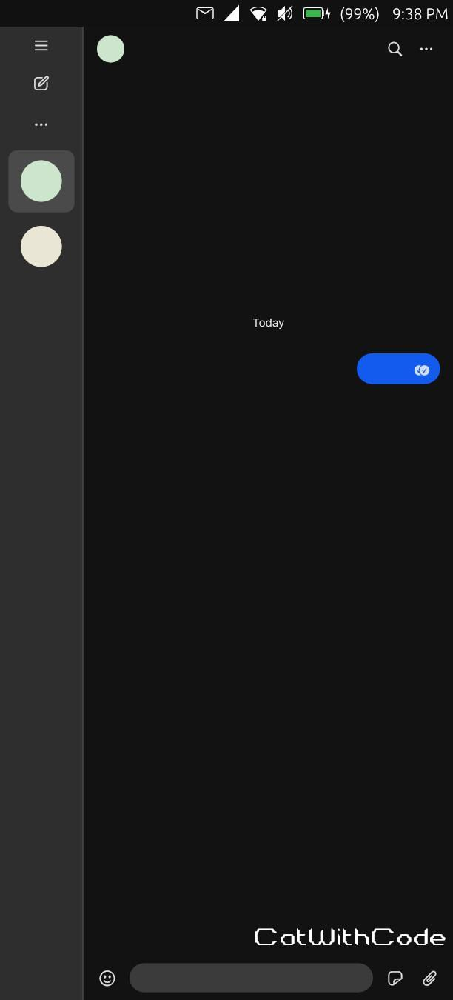
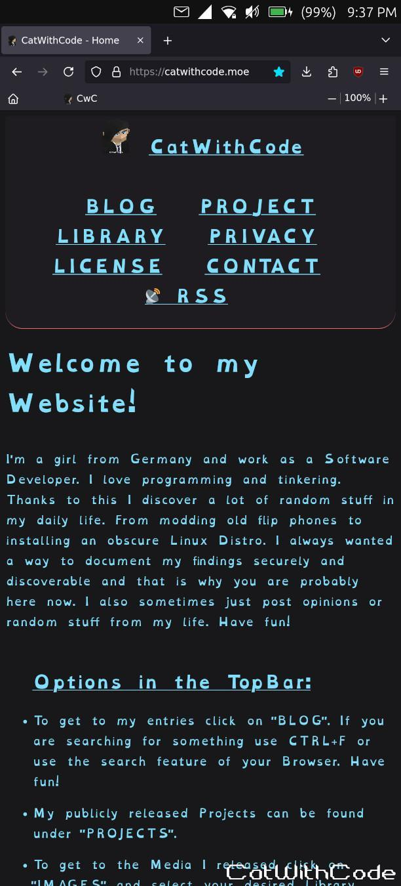

Everything about Ubuntu Touch on the Fairphone 5
This is outdated for 24.05. I used mainly 20.04. Proceed with caution.
In this entry I will document everything about using Ubuntu Touch on the Fairphone 5. I independently volunteer as a beta tester.
Many parts can be done on any Ubuntu Touch device!
This entry uses the "Everything about Fairphone 5 Modding" entry as a base and is written in the same structure:
/Blog/2023.11.13_Fairphone-5_Stuff/Fairphone-5_Stuff.html
After almost 10 years, it is nice to see the beautiful UI again. After backing up as much as possible with "Neo Backup" (TWRP still does not allow DATA backups), downloading all the packages (LinageOS, FairphoneOS 13&14 and the UT installer) and making sure the phone was fully charged, I started.
I also have opened a topic on the UBports forum with the help of "Keneda". It's a bit chaotic because I have to merge some wrongly split topics thx to me LOL. I will clone my report over there for the convenience of the devs (But my main place for ALL information will remain here :D).
I linked ALL sources, used guides and manuals and fixes from users (with names).
https://forums.ubports.com/topic/10472/beta-bug-reports-catwithcode
https://gitlab.com/ubports/porting/community-ports/android11/fairphone-5/fairphone-fp5/-/issues
Note: I test drove the Fairphone 5 with UbuntuTouch for around 17 days two times. Don't worry I hand a second, fully configured phone on hand just in case (And a Android Phone was ready to swap in). I relyed on some Android apps to work but the main once are covered and waydroid helps with the rest.
>> What works, what dose not
A list of stuff I tested with last tested Status and the Tickets if any:
UPDATED: 2025.07.21
SOFTWARE: r52X
✅ WORKS | üìà WORKS, BUT STILL TESTING | ‚ûñ NOT TESTED YET | ‚≠ï ISSUES | ❌ NOT WORKING
- ✅ Install
- ✅ Setup
- ✅ Working with German SIM-CARD
- ✅ WiFi (With Network enforced Pi-Hole)
- ✅ Camera (Photo, Video, with and without Flash, Switching between cameras. Sometimes I need to reboot for it to work.)
- ✅ LTE [Works but sometimes I need to reboot for it to work]
- ✅ Alarm and Timer
- ✅ Stability (Fine)
- ✅ 5G (Somehow works better, faster and more reliable then on Android)
- ✅ VoLTE
- ✅ GPS (Works even inside Waydroid. Enable it in UB then start waydroid and enable it there)
- ✅ Battery Life - Really good! X11 App's running can consume a good bit more.
- ✅ Heat (More with Waydroid)
- ✅ Snap's (Using Snapz0r - Many Apps run! BUT onscreen keyboard dose not work in general for snap on UbuntuTouch! Normal USB-Keyboards do!)
- ✅ Tap to wake
- ✅ Performance (Good. Display seems to run at 60hz (not the possible 90hz), but performance-intensive stuff like streaming 1080p@60fps is working great regardless.)
- ✅ SMS
- ✅ CALL (2G, 3G, LTE, 5G)
- ✅ FLASH
- ✅ Vibration
- ✅ Screen Brightness (Sensitive but works)
- ✅ Proximity
- ✅ Rotation
- ✅ Fingerprint reader (Needs screen to be on. Seems just the way UbuntuTouch works.)
- ✅ USB-OTG (I had many issues with USB3.X and newer. BUT it was with the phone not matter what. So it is a FP5 or PC chipset issue, not Ubuntu Touch.)
- ✅ Keyboard
- ✅ Mouse
- ✅* Emergency Broadcast (If your country uses the reference implementation correctly it should work if you ask the forum. For me impossible to test. If at some point I get one and I see it for myself working in Germany I will update this: https://forums.ubports.com/post/83531)
- ✅ USB-HUB
- ✅ Sleep (Same time everywehere even on LockScreen (Unlike Android))(Same time everywhere even on Lock-screen (Unlike Android) aka. long Screen On times not recommended.)
- ✅ AUDIO (Is combined on Ubuntu Touch. So don't forget to make your phone quieter in the evening or you alarm will be at full volume or whatever was used last... .)
- ⭕ USB-MTP (USB to PC. Works but Copy/Past and file management is very buggy and slow. adb shell/pull/push is way better and WAY faster and 100% reliable)
- ✅ USB-AUDIO (Even USB to AUX Audio. Dose not work for me on Android for some reason)
- ❌ USB-VIDEO [BUG: Black Screen, Soft/Hard-Reboot and a broken Dekstop on Phone. Tested with USB-C to HDMI (Probably 3.0) and a Dock (Mostlikly 3.X).
-
✅ Waydroid
How well dose it work:
It works. It is a stopgap and nothing more. I recommend to use it as little as possible and make the battery settings for apps as aggressive as you are able too. I also removed literally anything not needed. Even the calculator.
NOT Working:
- Vibration
- Notifications inside Ubuntu Touch
- ✅ NFC (Tested with Flipper Zero)
- ✅ Bluetooth
- ✅ Libertine (Tested with Firefox and Signal-Desktop [AUDIO/MIC WORKS IF YOU INSTALL "pavucontrol".]) [Currently, generally broken for Ubuntu Touch. It actually works but one package (libc6) is outdated or miss-configured and needes to be tricked to install https://forums.ubports.com/topic/11112]
- ✅ Shutdown/Reboot (Was Bugged in the past. Now it works.)
- ⭕ Snaps - Work relatively well but without OSK it is kinda hard to use. But else stuff like Signal are the best here because of native Notifications System use incl. Screen-Wake, background usage and even calls (Without microphone)!
>> Snap's:
Snaps do work on the Fairphone 5. Compatibility far better now, but still hit or miss.
Snaps can be enabled with the app "Snapz0r". The only issue I have is that it lets you uninstall things in ways where you don't know what is being done. It is great for installing snap and seeing whats on the phone but I installed and managed snap's with the terminal.
Snap also dose not allow some hardware access, camera or Microphones for example.
Here are the apps I tested:
- ❌ Firefox - Did not work
- ⭕ Signal-Desktop - Did start but context menus buggy the app sometimes. You can connect and use Signal but OSK use is not possible. It would be the best Signal option if the OSK would work or you have a keybaord on your phone all the time and somehow got the microphone to work.
>> Lessens when working with Ubuntu Touch:
- "Libertine" and "Libertine Tweak Tool" are your way around missing apps.
- Installing with Libertine must stay in the foreground. Set your screen to never turn off and never leave the screen until its done. Libertine can be sensitive to being closed / backgrounded.
- If you rotate your phones X11 will not allow you to touch outside the original Startup Resolution. You must restart Firefox in the orientation you need for the full season. Annoying but not to bad.
- Libertine dose not run in the Background! Meaning you must keep open the Task-Tap. Also meaning: You should create a Libertine-Container for your Main App's and one for your background App's. For example Jellyfin, SuperSonic and Firefox in the MainContainer, E-Mail-Client or IRC e.g. in your Background container. Keep the windows in the Task-overview for your Background-apps always open..
- When deleting Libertine-Container files in home like configs stay behind and will not be deleted. Meaning if you broke something inside of the Apps you should delete the files inside the container and not the Container itself.
- Container take up a lot of space (each around one Linux install). Meaning you should not have more then 3. Main, Background and testing (Testing is to check if the App works. That way you don't bloat or break your main container).
- For a some of apps you can use Snap. But from my testing some Programs don't work (Firefox e.g.). Snap can not use SOME hardware (One-Screen keyboard, canmera, earpiece) which makes sub-optimal.
- When modding SSH is useful because keyboard. But SSH did not work out of the box. I followed the manual from UBports and it refused connections. Fix was to execute sudo /etc/init.d/ssh start. Found by "delight_aug"
- adb shell works perfectly and should be used instead of SSH.
- Special keys (like Backspace) have issues with some Terminals when using SSH or adb shell. Works when executing export TERM=vt100 inside the shell after connecting (Found by paul). Adding it to the end of the .bashrc file and exit and reconnect fixes it permanently (Still has some minor issues).
- It is possible to install .deb in Libertine-Container with the commands over at the UBports wiki. It is important to not escalate root by accidentally to the real os.
- To get root in Libertine you can follow the official way if it works for you or you execute "sudo -E bash" and then lish CONTAINER_ID into it. BE VERY CAREFUL! Found by nom.
- "Pulsar33" has summarized a lot of useful information for debugging and tweaking over at the UBports forum: https://forums.ubports.com/topic/6912
- If you have done anything inside a Libertine-Container with root, you can only delete it if you change to root in the terminal and "chmod -R 777 .cache/libertine-container/focal-2/ your container. After that the Settings UI can delete it just fine.
- Libertine-Container (especially broken once, like Signal) can actually cause boot to take longer (several black screens before the password screen appears).
- Waydroid works. It dose use a good amount of power
, needs workarounds for stuff like GPS and is a little (A LOT LESS NOW) prone to crashing and access issues. Notifications are not shown in Ubuntu Touch which is annoying and even vibration dose not work which makes me check Waydroid more often then I want to. Maybe this stuff can still be fixed. It is a stopgap solution but the most powerful, hardware accelerated and useful you can have. It makes it nearly 100% viable to not use Android or IOS these days if you know what your doing. This makes Ubuntu Touch extremely powerful, even more then Android in my opinion. PostmarketOS could even be better but usability as a mobile phone and a “something you sometimes need FAST device” goes down the hole at that point if you ask me. My testing is years back but as soon as there compatibility is fully Green I will 100% test it. On Ubuntu Touch, the only “fully” working Linux on Fairphone right now, if I need to do something in a short amount of time I am sure I can do it if I have it installed even if it is a little buggy on the way.
- To make using file between Waydroid and Ubuntu Touch seamless use these SystemLinks: https://docs.waydro.id/faq/setting-up-a-shared-folder. This might not work because of permissions. There is also the offical UBPorts way: https://docs.ubports.com/en/latest/userguide/dailyuse/waydroid.htmlThere. And there is a script if that dose also no work, to fix that but it needs chron aka. / needs to be modefied https://forums.ubports.com/post/86421.
>> Fixing Libertine create:
Libertine is not as often used as you might expect what causes fucked create processes sometimes. That has way to often to do with core and the uname version. That can be forced and fixed by following this tutorial by "NewBit"
https://forums.ubports.com/post/73301
You just need to create the script in your Downloads folder and then create a script inside you home folder. Make both executable and execute the replacement script and in a separate remote terminal launch the creation process. Sadly if it still fails you have to retry again, cancel the install to the end and then check the log what went wrong. And sadly every retry requires a re-download of every package because reasons.
They wrote in the guide to replace the uname in the / system as well. That can be done with a remount of / BUT it is very important to after the container is running and working to FIRST replace the fake uname with the real one again in /.
sudo mount -o remount,rw /
In case the issue is the same but it somehow dose not work:
I tried the linked tutorial and it did not work. Somehow it always replaces the uname. Sooo... I made the method way more aggressive and brute force. Here's how I did it (VERY IMPORTANT: I WILL NOT EXPLAINED IT AND IT DOSE STUFF THAT CAN BACKFIRE!)
- PC: adb shell
- sudo mount -o remount,rw /
- Create ~/fixLibertine.sh
-
---
while ! test -f "/home/phablet/.cache/libertine-container/linuxapps/rootfs/bin/uname"; do
sleep 0.1
echo "Still waiting"
done
sleep 0.2
while ! test -f "/home/phablet/.cache/libertine-container/linuxapps/rootfs/bin/unameaaaaaaaaaaaaaaaaaa"; do
cp ~/Downloads/uname ~/.cache/libertine-container/linuxapps/rootfs/bin/uname.orig
cp ~/Downloads/uname ~/.cache/libertine-container/linuxapps/rootfs/bin/uname
done
---
- Create ~/Downloads/uname
-
---
#!/bin/bash
unameparams="$(uname "$@")"
revision_number=$(echo $unameparams | grep -oE '[0-9]{1}\.[0-9]{1,2}\.[0-9]{1,3}' | grep -oE '[0-9]{3}')
echo $unameparams | sed -E 's/[0-9]{1}\.[0-9]{1,2}\.[0-9]{1,3}/4.14.250/'
---
- sudo mv /bin/uname /bin/uname.orig
- sudo chmod 755 ~/Downloads/uname
- sudo cp ~/Downloads/uname /bin/uname
- sudo cp /bin/uname.orig ~/Downloads/uname.orig
- Start a second adb shell
- libertine-container-manager create -i "linuxapps" -n "linuxapps"
- In the second shell: ./fixLibertine.sh
- PROFIT?
- sudo mv /bin/uname.orig /bin/uname
- cd ~/.cache/libertine-container
- tar -czvf linuxAppsBackup.tar.gz linuxapps
- PC: adb pull /home/phablet/.cache/libertine-container/linuxAppsBackup.tar.gz
- PC: adb pull /home/phablet/.local/share/libertine/ContainersConfig.json
- cd ~/.local/share/
- tar -czvf libTraBack.tar.gz libertine-container
- PC: adb pull /home/phablet/.local/share/libTraBack.tar.gz
- PROFIT!
- libertine-container-manager install-package -p firefox
- libertine-container-manager install-package -p pavucontrol
- Reload HomeScreen and test Firefox
- !!!PROFIT!!!
I highly HIGHLY H-I-G-H-L-Y recommend to backup as I did. You don't want to write into the system storage (DON'T FORGET TO REVERT THE CHANGES!!!) and risk Soft-Bricks every time and you don't want to relay on the sometimes broken Libertine Repository for reset or new creating. Then at least you have a reset point you can also use as a base for new containers (Just edit the .conf file and add a new container, copy the media folder and copy the chroot container to the cache location). No re-downloads, easy experimentation and also a way to restore on update issues.
>> Backups:
TWRP is sadly not an option. It can be booted with fasboot boot twrp.img and it even can decrypted all partitions (unlike with Android) but it can not backup anything because it dose not know how to work with a Linux (or more precisely Ubuntu Touch) partition. It finds everything but that's it.
I think the best way to do this is to just “adb pull /home/phablet”. It backups everything the user changes. All system changes like Waydroid or Snaps must be done beforehand but then just overwrite everything in the home folder with your old config. This will probably crash a lot of stuff and a hard-reboot is needed to prevent overwrite of configs but it works.
>> App Replacements (Moving in/Getting fully Setup):
List of apps that can be used/can be replaced or the best way to use them (and sometimes a explanation why it is done that way).
-
Jellyfin:
How:
>> "Waydroid" with the F-Droid App "Findroid" with "mpv player" enabled.
Why:
>> Libertine can NOT be used. Thanks to Firefox I know in Libertine the codecs are missing too.
>> I tried a "clickable" app from the OpenStore and also compiled a modefied version myself. Both are missing codecs (If you are not able too transcode EVERYTHING).
-
Browser (Firefox):
How:
>> "Libertine" using my Firefox-Guide on this page.
>> And "Fennec " in "Waydroid" for Web sruff needed by Android-App's.
Why:
>> Libertine is the "lightest" way to get a fully functional, "acceleratted" and modern browser with Ad-Blocking.
>> Waydroid is too heavy with to little benefits compared to Libertine.
>>"Morph Browser" is hopelessly out-of-date and has way to little features for the modern internet and other browsers in development are still to much in development.
-
Wallet:
How:
>> "fWallet" using "Waydroid".
Why:
>> Good enough for buss tickets or concert tickets. For Stuff like money stuff not. But if you use Ubuntu Touch I am sure your willing to not use some modern big tech conveniences. Inside of Waydroid because, most likely, your E-Mail provider is not available for Ubuntu Touch so you probably use the client inside of Waydroid.
-
GPS-Navigation:
How:
>> You have multiple Options. GPS inside of Waydroid WORKS! Many threads online say it dose not but somehow on Ubuntu Touch it works. So… you can use native (Pure Maps & OSM Scout Server) or in Waydroid any Navigation App like OsmAnd~ and so on. Even Google Maps if you really really want too..
Why:
>> I would always recommend to have one option native and one in Waydroid just to make sure you have Navigation available no matter what.
-
2FA:
How:
>> YOU DON'T!
Why:
>> I could not find an app that implements enough security features to be considered trustworthy/safe enough for such a high security task. Waydroid runs on a higher level the other apps and files are only accessible thought root BUT runs unencrypted (Just like Ubuntu Touch itself). Besides that I would highly HIGHLY recommend to use a separate device for 2FA. And no I don't mean proprietary BS I mean an other Android phone or stuff like a Raspberry-Pi, a Linux PC, a Flipper, ... . Just something that disconnects your 2FS-Hardware from the Software and Internet. If something like 2FS lives on the same device as you log-in or access your E-Mails the security must be extremely high IMO.. Locked, OpenSource Android / Locked Stock Android from an actually trustworthy vendor with Aegis used with a password/bio-metrics is the sensible minimum if it's on the same device. (And yes, this contains also a good amount of my opinion as a years long software developer).
>> If you still want to use your 2FA stuff, no matter what kind, on the phone that's your daily, use Waydroid and Aegis and a STRONG password.
-
Signal (Or any other Chat App's):
How:
>> Install App in "Waydroid".
>> A Desktop-Version for arm64 in .deb format exist for nearly all chat app's and can be in a really f*cked Libertine container. You can find a guide on how to do this on this page. It will no be able to update except you know how to get out of dependency hell (It will need less power BUT has the same Issues).
Why:
>> I use Waydroid. Getting the clients to work inside a Libertine container is hard, broken and buggy. A Libertine container works and uses less power but will be more buggy and has the same notification issues as Waydroid. From my testing Waydroid can play sounds with the screen of running in the Tasksview. You must set a custom ringtone inside Signal, WhatsApp, [INSERT GENERIC CHAT APP], ... and so on, else NONE is the default by the OS. EarSpeak sound dose not work, meaning loudspeaker on very low is the way to go. Same with Libertine container versions. The sound can only be muted INSIDE Waydroid. Libertine container don't have that. No ScreenWake and no Icon in the System tray of Ubuntu Touch in both. Both must run in the Background open in the TasksView of Ubuntu Touch. Make sure to close all apps in waydroid if it's in the background. Even a open app doing nothing needs more power!
>> From my testing I found that Signal Snap works the best as an energy efficient way to use Signal. It can sadly not use the microphone. It even uses the Ubuntu Touch notifications system and can turn on screen and even take calls (Only Ear Speaker is not working, uses loud speaker). BUT! it can not use the OSK of Ubuntu Touch... . If the OSK gets fixed (And the OSK could have CTRL, SHIFT and ALT... it's Linux on mobile, come on, this is for geeks and geeks only (for the foreseeable future)) this would be peak. Libertine theoretically still works too but is still way to unmaintainable for updateds to signal.
>> Installing Signal (Desktop):
(((Warning: The way to get root inside a container might have chnaged. I tested this once and it still works but I am not sure what way to get root is the right way to dos it. But I don't use any of these Signal steps because they are near unmaintainable.)))
This was a lot of work. And believe me when I say: be prepared for a lot of jank.
I got Signal Desktop fully working. Yes its a bit janky to use, but keyboard, UI, Calls, Microphone, Popup-notifications (EVEN WHEN THE SCREEN IS OF FOR A LONG TIME! !BUT! only if you leave Signal, meaning: Open Signal without opening a chat (too safe battery) and then swith to a other App or simmular. Off screen detection in X11 is a little inconsistent) (Not notifications in the Ubuntu Touch notifications center) and File Browser work. Video call dose work but dose not get any feed (Probably a Libertine limitation): https://forums.ubports.com/topic/10431/
History on how I got there:
I tried to use it natively (did not work), Snap (Works best but OSK is not working...), and the with Libertine and Flatpak (dependencies-Hell). The last thing I wanted to try was Libertine native. Signal-Desktop is a self packaged Electron app. Meaning it has (nearly) everything it needs build in. And that guess was right! BUT to get it to work there were two issue. glibc is exactly 0.01v too old... yes that little. The second issue was to get Signal-Desktop for arm64. There is currently no official versions BUT I found a git repository that has the current version forked. They use the latest source and build it with custom build-scripts in the GitHub build pipeline. This as save as its gonna get with this amount of jank.
Signal uses more battery then it should. It uses a little less if you close it and reopen it and don't open any chats.
WARNING: THIS USES UNOFFICIAL SIGNAL FORK! It builds with the Source and just different build setups but still be careful! ALSO: YOU ARE ON YOUR OWN!
The best is to have two terminals open on your PC to be able to push and work inside the container at once.
Replace "focal-2" if your container ID is different.
THIS WILL BREAK AT SOME POINT! DEBUG CAN BE DONE WITH ENTERING THE CONTAINER AND CHECKING LOG WITH: "nano nano /home/phablet/.local/share/libertine-container/user-data/focal-2/.config/Signal/logs/main.log"
- Create a new Libertine container for signal-desktop and never install anything else inside it!
- UPDATE 2024.11.11: This setting changes the output at full system level and not only the container. Mayber just turn down the volume of the Main Speaker? :S
Install pavucontrol in the container and set the Output-Speaker to earpiece (This can/will reset on reboot. Needs to be set every reboot!).
- Get yourself a ARM64/AARCH64 build of Signal-Desktop: https://github.com/signalflatpak/signal
- Push it into the Libertine-Container: "adb push Downloads/signal-desktop_arm64.deb /home/phablet/.cache/libertine-container/focal-2/rootfs/".
- Access the Container as root: "sudo -E bash" then "lish focal-2"
- Install Signal-Desktop: "apt install /signal-desktop_arm64.deb"
- Here it gets hard to know whats better. There are two options that need to be done inside the container:
- Breaking all dependecies:
- Now comes the extremely janky breaking part. Get yourself the two libc library's Signal-Desktop's SQL implementation needs. These are the ONLY two version that worked without breaking everything. I got them from Debian. This also makes you unable to install/update/upgrade with apt. It breaks this part of the container:
- Now Push them both into the container:
- adb push libstdc++6_12.2.0-14_arm64.deb /home/phablet/.cache/libertine-container/focal-2/rootfs/
- adb push libc6_2.40-3_arm64.deb /home/phablet/.cache/libertine-container/focal-2/rootfs/
- The big issue now is that apt "respects" dependencies. To "get around that" we force it with dpkg:
- dpkg --force-all -i /libc6_2.40-3_arm64.deb
- dpkg --force-all -i /libstdc++6_12.2.0-14_arm64.deb
- Forcing the container to switch over to Debian (I tried "bookworm"):
- Now comes the extremely janky "better?" part. You need to turn the Ubuntu Container into a Debian Container. Debian has not all packages libertine-container need. Meaning it will ask you to use autoremove (DON'T! IT WILL BREAK ALL LIBERTINE-CONTAINERS AND YOU NEED TO REMOVE AND REINSTALL THEM ALL!):
- Change the Repository to Debian (I used the first one I saw on the page. Don't copy paste. DO IT YOURSELF TO MAKE SURE ITS UP-TO-DATE). Replace the URL and the current Version: nano /etc/apt/sources.list
- Now try to update: apt update
- You will get an error. You need the Debian Keys. Copy all keys missing and add them to the command (Replace all keys from me. They are probably are old and invalid):
- apt-key adv --keyserver keyserver.ubuntu.com --recv-keys 54404762BBB6E853 BDE6D2B9216EC7A8 0E98404D386FA1D9 6ED0E7B82643E131 F8D2585B8783D481 0E98404D386FA1D9 6ED0E7B82643E131
- apt update and apt full-upgrade
- The only issue I faced was libc-bin. I could not install. I could for it to with the following:
- Downloading the current build (libc-bin_2.36-9+deb12u9_arm64): https://packages.debian.org/bookworm/arm64/libc-bin/download
- Extracting the Data Folder inside and pushing them into the Container:
- adb push etc/ /home/phablet/.cache/libertine-container/focal-2/rootfs/
- adb push sbin/ /home/phablet/.cache/libertine-container/focal-2/rootfs/
- adb push usr/ /home/phablet/.cache/libertine-container/focal-2/rootfs/
- adb push var/ /home/phablet/.cache/libertine-container/focal-2/rootfs/
- Then I pushed the current build to the container and installed it normally with apt. This time it worked.
- adb push libc-bin_2.36-9+deb12u9_arm64.deb /home/phablet/.cache/libertine-container/focal-2/rootfs/
- apt install /libc-bin_2.36-9+deb12u9_arm64.deb
- apt update, apt upgrade and apt full-upgrade
- Do it in this order. It can also happen that you need to install a package manualy. And then it could happen that you need to use "apt --fix-broken install" (read!, then execute). Just get it to a point where it says 0 updates available.
- I said yes to every overwrite and then exited and reentered the container.
- If you forgot to change the output to earpiece, you can use pavucontrol from a other Container (They change the full system output) or you can fix it with these commands (pavucontrol must be installed in evey Container that should output audio, but in this container the UI for settings changes crashes after the "Debian swap"):
- apt install pulseaudio-utils
- Exit out of the container and root and then reenter the container.
- pactl list sinks
- You should find "Sink #1" with it's output "output-earpeace". Use it.
- pactl set-sink-port 1 output-earpiece
- Now everything needed to be installed should be done.
- Open "libertine-tweak-tool" and select your container and set DPI to 149
- Now you can use a different phone (IPhone, Android or an Android-VM with a WebCam) to connect your account.
- Wait for two minutes for syncing and the force close Signal and reopen it.
- Now you open the Settings at the bottom left and the change the scaling to 150%. Dropdown menus are broken and to be able to set them connect a keyboard and open the menu with a mouse or touch and then use Tap to navigate to the menu points and use the arrow keys to change your selection.
- Go into the Settings and in the permissions-area in general set "Allow access to microphone". Same for camera.
- It can be handy to use a mouse and make the chat-bar so small it becomes an icon-bar. Press right and left mouse button at the same time and pull it fast to the left multiple times.
- DONE!
Current known Issues:
- UPDATE 2024.11.10: You can get "somewhat" around the sending issue. Type enough so the "Expand Text Box Arrow" is usable (or move you finger around the text box a little (up works very often), for some reason the arrow shows up then too), press it and now you can press the blue send button to the right. It is far FAR from working / good but it works for now. That also allows selecting and then "overwriting" the current text. That can be considered as a "backspace" workaround.
---
Sending Text without a external Keyboard is broken because Enter and backspace dose not get processed by Signal-Desktop. As far as I can tell that could be fixed with a custom layout that has CTRL and the other modifiers. I'm currently looking into the Keyboard's source code. I do not know yet if creating such a layout is possible (maybe based on the emoji keyboard?): :
- Loading Images is currently broken. It has to do with the "fs-extra" library Signal-Dekstop uses that falsely thinks it could not create a file. This is fixed in a full fork of Signal-Dekstop but this fork is far behind main and uses it's own forked source code. Integration of the patch should be easy but I don't have much experience with GitHub's workflow pipeline yet:
THIS IMAGE IS EDITED! EVERYTHING WAS WORKING NORMALLY! JUST REMOVED INFORMATION!

>> Installing a usable Browser (FULL FIREFOX):
Installing as usable browser is possible with Libertine.
Open Libertine and create a new Container, open view and show log. Then wait until nothing happens anymore for 2 minutes. Then install the package "Firefox". Make sure to open the container and show the shell log while it is doing its thing. After it is done and Firefox (and VIM...) is in your Homemenu you can install a other app called "pavucontrol". Open it once. After that you can start Firefox. It will be way to small and unusable. You need to do a few modifications to fix that. We will fix the scaling, the UI and a few other things.
When changing the UI connect a mouse to right click or make precise inputs can be helpful. You must configure the UI now because later Firefox will crash when moving UI elements. Make everything as large as possible (density) and remove all elements you don't need. Add resize to the bookmarkbar and set it to always be visible. The enable TitelBar to make the Titelbar go away (LOL). If you need a reference, an image is at the end of this section.
Fixes:
- Use the Terminal and nano into the file "/home/phablet/.cache/libertine-container/linuxapps/rootfs/usr/share/applications/firefox.desktop" and add env MOZ_USE_XINPUT2=1 after every exec= command inside the Desktop file. That enables full touchscreen support. Found by moodroid.
- UI and Scaling: Using "Libertine Tweak Tool" setting DPI to 149. Then in Firefox open “about:config” and set perpx to 1.4. This works really well together with the "MOZ_USE_XINPUT2" touch fix. This makes the UI very usable but breaks a some Website Sizes. This can be mitigated by adding the size widgets to the bookmarkbar. Then you can just resize the page.
- Performance: Easy. Install uBlock Origin and leave it at the default Settings. More aggressive is better but cost to much battery on a phone. Stuff like Firefox-Strict-Mode also helps.
- Disable Keyboard auto-features. Meaning: Spell checking, Auto correction, Word suggestions, Auto capitalization and Auto punctuation. It breaks inside Libertine-Containers.
- Thats it! Now firefox works great.
This is how Firefox looks when everything was done right:

>> Installation:
I had LinageOS installed, so I flashed the Stock Android 13 Rom (Android 14 was already out but the installer wants Android 13. It is very important to use the right Android Version).
It is also important to install Android 13 once before switching and then enable Developer mode AND OEM unlock. Then install should work. Else it will not be able to change the slot or flash firmware or format partitions.
I use Arch (BTW.) and used the official UBports Installer. It did all the udev stuff for me and flashed the phone without any issues.
I use a very good USB 3.2 cable that came with a SanDisk SSD (I think something like "SanDisk Extreme Portable" or along those lines.). It's short, it's annoying, but it's the only USB-C cable I trust with stuff like this. I hate the inconsistency with USB-C cables.
I had so many issues in the past with OEM cables or even good ones that were out of spec. If you ever have problems with low level flashing, it could be the cable. Try different ones until you find a reliable one.
I want to use this part to make it oven more clear once more: THE USB CABLE CAN F*CK YOU OVER WITH THIS! IF IT JUST REFUSES TO WORK IT COULD JUST BE THE CABLE, OR "C to C" OR "A TO C" OR EVEN 3.0 VS 2.0! WHAT EVER COMBINATION!
https://devices.ubuntu-touch.io/installer/
Sources: